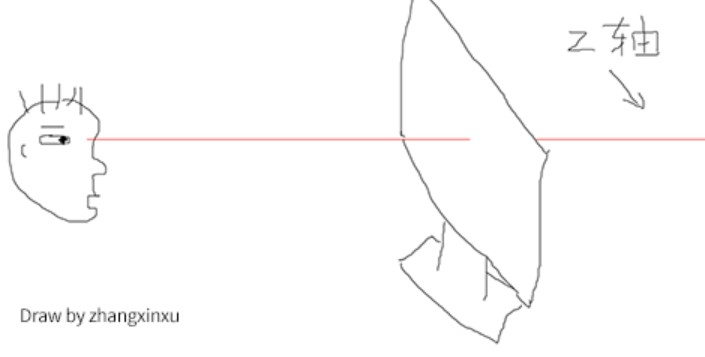
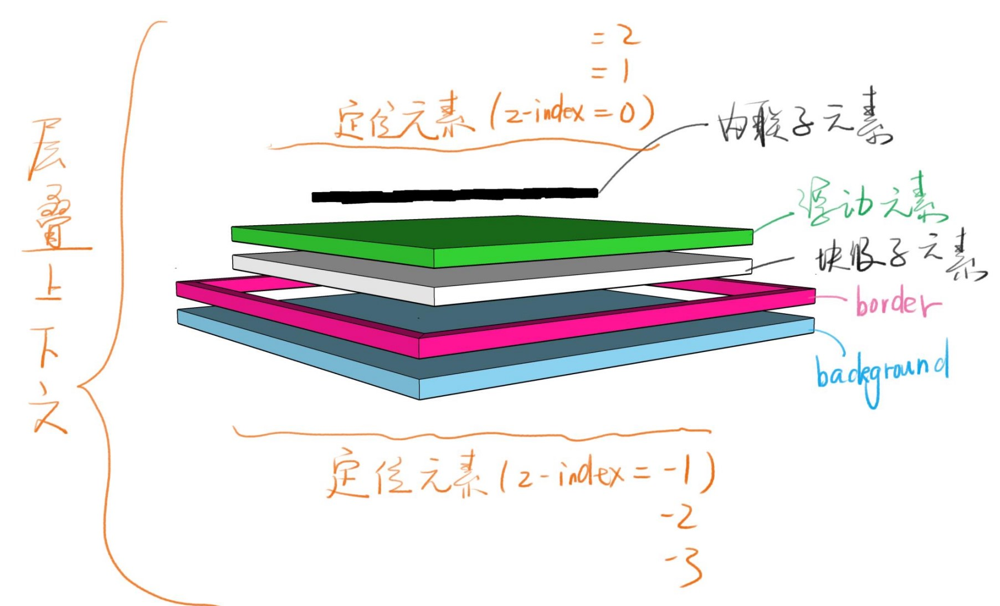

z-index与层叠上下文
层叠上下文
- 层叠上下文，英文_stacking context_，是HTML中的一个三维概念，如果一个元素含有层叠上下文，我们就可以理解为这个元素在Z轴上就”高人一等”。
- 显示器的宽可以理解成X轴，高理解成Y轴，Z轴就是我们眼睛看向显示器的那条线，如下图所示。 
层叠顺序
表示元素发生层叠时候有着特定的垂直顺序
当发生层叠的时候，覆盖关系遵循下面2个准则
- 谁大谁上 : 当具有明显的层叠水平标识的时候，在 同一个层叠 上下文领域，层叠水平值大的那个覆盖小的那一个。
- 后来居上 : 当元素的层叠水平一直，层叠顺序相同的时候，在DOM流中处于后面的元素会覆盖前面的元素。
比喻
- 每个层叠上下文就是一个新的小世界(作用域)
- 这个小世界里面的z-index跟外界无关。
- 处在同一小世界的z-index才能做比较。
层叠上下文的创建
很多属性都会创建层叠上下文,具体可以在MDN
记住关键几个：z-index、flex、opacity,transform
参考资料：
饥人谷
张鑫旭深入里面层叠上下文：https://www.zhangxinxu.com/wordpress/2016/01/understand-css-stacking-context-order-z-index